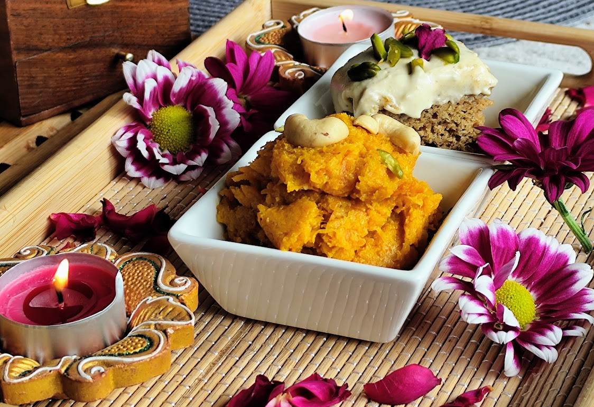
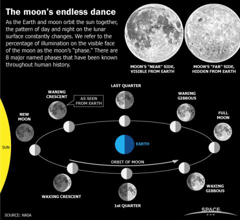
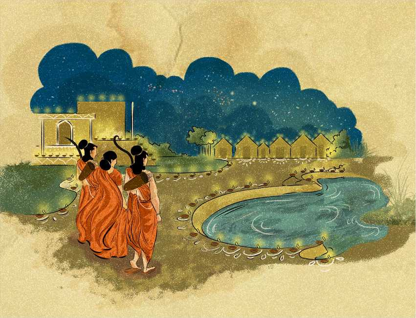
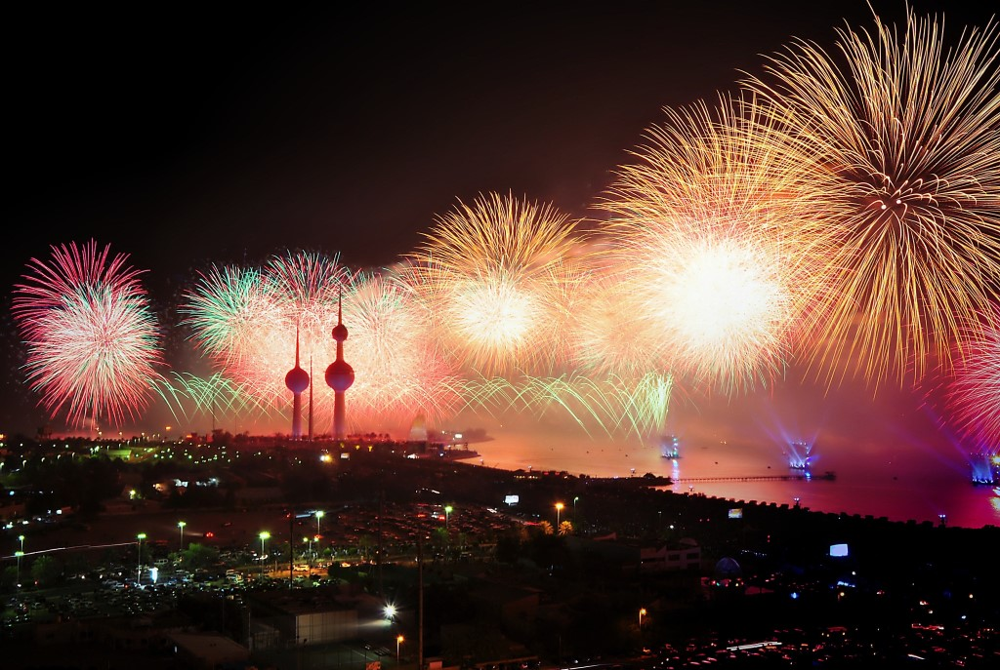
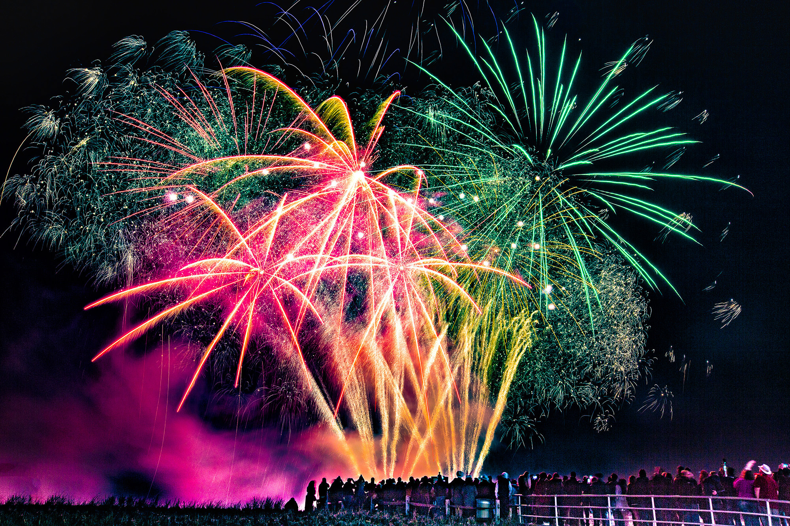
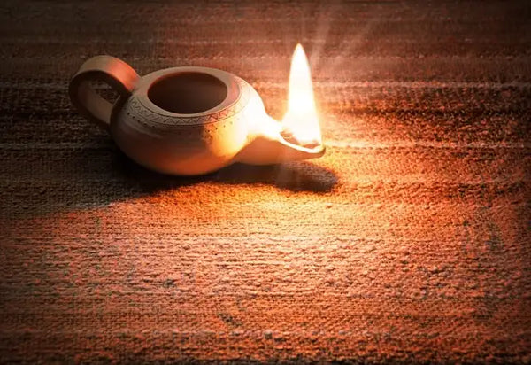

Diwali
📖
Note: This article is intended for reflection and sharing knowledge. It is not written for
debate, but for thoughtful exchange of perspectives.
Introduction

Diwali, also known as Deepavali, is one of the most important and widely celebrated festivals in India
and
among Hindu communities worldwide. The name “Deepavali” literally means “row of lamps”, referring to the
tradition of lighting oil lamps (diyas) during the festival. Diwali is multi-religious: in Hinduism it’s
about light, wealth, and victory of good, in Jainism it’s about spiritual liberation, and in Sikhism
it’s
about freedom and justice.
Here’s a clear breakdown:
- Significance
- Spiritual: Diwali symbolizes the victory of light over darkness, knowledge
over
ignorance, and good over evil.
- Cultural: It is a time for family gatherings, exchanging gifts, and
performing
religious rituals.
- Mythological: The stories behind Diwali vary regionally:
- North India: Celebrates Lord Rama’s return to Ayodhya after 14
years of
exile and defeating Ravana. People lit lamps to welcome him.
- West India: Linked to the worship of Goddess Lakshmi, the goddess
of
wealth and prosperity.
- Other legends: Includes stories of Lord Krishna defeating the demon
Narakasura and King Mahabali being welcomed by Lord Vishnu in Kerala (Onam overlaps
with
Diwali season for some regions).
- Duration
Diwali is a five-day festival, with each day having its own significance:
- Dhanteras: Buying gold, silver, and new utensils for prosperity.
- Naraka Chaturdashi / Choti Diwali: Symbolizes the victory over evil.
- Diwali / Lakshmi Puja: Main day; houses decorated with lamps, prayers to
Goddess Lakshmi.
- Govardhan Puja / Annakut: Celebrates Lord Krishna lifting Govardhan Hill.
- Bhai Dooj: Celebrates the bond between brothers and sisters.
- Customs and Traditions
- Lighting diyas and candles around homes.
- Fireworks and crackers.
- Decorating homes with rangoli (colorful floor designs).
- Offering sweets and gifts to family and friends.
- Performing puja (prayers), especially to Goddess Lakshmi for wealth and prosperity.
In short, Diwali is a festival of joy, light, and family bonding, celebrated with a mix of spirituality,
mythology, and festive cheer.
Celebration Day

Diwali has a direct relation to the moon because it is based on the Hindu lunar calendar. Here’s how:
- New Moon Night (Amavasya):
- The main day of Diwali, Lakshmi Puja, falls on Amavasya, the darkest night of the lunar
month of Kartik.
- This is why Diwali is sometimes called the “festival of lights on the new moon night”.
- Lunar Calendar Influence:
- Hindu months follow the moon’s cycles.
- The waxing and waning of the moon determine the dates of other festival days as well, such
as Dhanteras, Naraka Chaturdashi, and Bhai Dooj.
- Symbolic Meaning:
- The dark new moon night represents ignorance or darkness, and lighting lamps symbolizes
knowledge and positivity overcoming darkness.
Diwali Stories

Diwali has different stories in Hinduism, Jainism, and Sikhism. Let’s go through them clearly:
1. Hindu Stories of Diwali
- Lord Rama and Ravana (North India)
- Rama returned to Ayodhya after defeating Ravana.
- People lit diyas to welcome him.
- Symbolizes victory of good over evil.
- Lord Krishna and Narakasura (South & West India)
- Krishna killed the demon Narakasura, freeing people.
- Choti Diwali (day before main Diwali) celebrates this.
- Symbolizes divine triumph over evil.
- Goddess Lakshmi
- Worshiped during Lakshmi Puja on the main Diwali night.
- Believed to bring wealth and prosperity into clean, well-lit homes.
- King Bali and Vamana (Kerala & South India)
- Vamana humbled the generous king Bali, sending him to Patala (netherworld).
- Diwali marks Bali’s annual return in some regions.
- Pandavas’ Return (Mahabharata)
- Pandavas returned home after exile; people lit lamps to celebrate.
- Symbolizes dharma and triumph of righteousness.
2. Jainism
- Story: Marks the day when Lord Mahavira, the 24th Tirthankara, attained nirvana
(liberation).
- Significance: A spiritual festival celebrating enlightenment and liberation.
- Tradition: Jain communities light lamps to honor knowledge and truth rather than
wealth.
3. Sikhism
- Story: Diwali coincides with the release of Guru Hargobind Ji, the 6th Sikh Guru,
from Gwalior Fort prison in 1619.
- Significance: Sikhs celebrate it as Bandi Chhor Divas (“Day of Liberation of
Prisoners”), marking freedom and justice.
- Tradition: Gurdwaras are illuminated, and the Golden Temple in Amritsar is
beautifully lit, often more spectacularly than typical Diwali decorations.
Relation to Vedas/Puranas
Interestingly, Diwali is not mentioned in the Vedas, which are the oldest Hindu scriptures. It also
doesn’t appear in early Puranas as a major festival. Its origins are more cultural and regional, later
tied to various mythological stories. Here’s a breakdown:
- No reference to Diwali as a festival.
- Vedas mostly describe rituals, hymns, and seasonal ceremonies, but not Diwali specifically.
2. Puranas & Epics
- Some later texts associate Diwali with mythological events:
- Ramayana: Lord Rama returning to Ayodhya after defeating Ravana.
- Padma Purana / Skanda Purana (later versions): Mention the festival in the
context of Lakshmi Puja and prosperity rituals.
- These references appear in medieval texts, not ancient ones.
Importance of Light, Diyas, and Crackers

The light, diyas, and crackers in Diwali aren’t just for decoration—they have symbolic and cultural
significance. Let’s break it down:
1. Importance of Light and Diyas
- Symbol of Knowledge: Light represents knowledge and wisdom, driving away darkness
and ignorance.
- Victory of Good over Evil: Lighting lamps reminds people of Rama’s return to
Ayodhya, Krishna’s victory over Narakasura, and the general triumph of good over evil.
- Welcoming Prosperity: Especially during Lakshmi Puja, houses are illuminated to
invite Goddess Lakshmi, the goddess of wealth and prosperity.
- Spiritual Significance: The small flame of a diya is a metaphor for the inner self
and soul, guiding one towards positivity and righteousness.
- Cultural Practice: Families clean and decorate homes with rows of diyas (Deepavali
literally means “row of lights”) to show joy and celebration.
2. Significance of Firecrackers
- Driving Away Evil: Traditionally, the loud sounds of crackers were believed to
scare away evil spirits.
- Celebration & Joy: Fireworks express happiness, victory, and community spirit.
People gather to celebrate together.
- Visual Spectacle: The bright flashes in the night sky complement the lamps,
creating an atmosphere of festivity and triumph over darkness.
History of Crackers

Interestingly, firecrackers are not mentioned in the ancient Vedas or early Puranas as part of Diwali.
The use of crackers is a later cultural addition, not originally a religious prescription. Here’s the
breakdown:
1. Ancient Texts (Vedas & Early Puranas)
- Vedas: No mention of Diwali or fireworks. They mainly describe rituals, hymns, and
seasonal ceremonies.
- Early Puranas: Focus on stories of Rama, Krishna, Lakshmi, and Bali, but do not
describe bursting crackers.
2. Later Texts / Folk Traditions
- Some medieval regional texts and commentaries mention lighting lamps and creating noise to celebrate
victories, but it’s more of a folk custom than a formal religious ritual.
- The idea of firecrackers came much later, likely with the invention of gunpowder in India/China and
festive celebrations evolving over centuries.
3. Symbolism in Culture
- Even though not in texts, crackers were adopted to symbolically ward off evil spirits, as loud noise
and bright lights were believed to drive away negativity.
- Over time, it became a common part of Diwali celebrations, especially in North India.
Invention of Gunpowder
The invention of gunpowder has a clear historical timeline, mostly associated with China, and it spread
to India later. Here’s the detailed breakdown:
1. Gunpowder in China
- Origin: Around the 9th century CE (during the Tang dynasty).
- Purpose: Initially invented by alchemists seeking an elixir for immortality, but it
was soon used for military purposes and fireworks.
- Use in Fireworks: By the 10th–11th century, Chinese were using gunpowder for
firecrackers, rockets, and celebratory fireworks.
2. Spread to India
- Introduction to India: Likely by the 13th century via Mongol invasions or trade
routes from Central Asia.
- Military Use: Initially adopted for cannons and firearms by Indian kingdoms and the
Mughal empire.
- Fireworks in Festivals: The use of firecrackers for celebrations probably became
common in India by the 16th–17th century, coinciding with regional Diwali festivities.
✅ Summary
- China: Gunpowder invented in 9th century CE → used for fireworks by 10th–11th
century.
- India: Introduced by 13th century, became common in festivals by 16th–17th century.
- Connection to Diwali: Firecrackers were incorporated into Diwali much later,
centuries after the festival’s origin, as a cultural adaptation inspired by Chinese technology.
History of Diyas (Oil Lamps)

Diyas (oil lamps) are much older than firecrackers, and their origin is tied to ancient human use of fire
for light and ritual. Here’s a clear explanation:
1. Origin of Diyas (Oil Lamps)
- Prehistoric Use of Fire: Humans have been using fire for light, warmth, and
protection since around 400,000–1,000,000 years ago.
- Earliest Lamps: Archaeological evidence shows earliest oil lamps date back to
around 4500–3500 BCE in Mesopotamia and the Indus Valley Civilization. These were clay lamps filled
with oil and a wick.
- In India: Clay diyas have been used since the Indus Valley Civilization (c.
3300–1300 BCE).
- Made from clay or metal.
- Burned ghee (clarified butter) or sesame oil.
- Vedic Period (1500–500 BCE): Lamps were mentioned in rituals and yajnas for
offering light to deities.
2. Symbolic Use
- Religious Significance: Light represents knowledge, purity, and divinity.
- Cultural Practice: Diyas were traditionally lit in homes, temples, and during
festivals like Diwali to symbolize prosperity and victory over darkness.
✅ Summary
- Fire itself: Prehistoric (hundreds of thousands of years ago).
- Oil lamps (diyas): Around 4500–3500 BCE, widely used in ancient civilizations,
including India.
- Vedic references: 1500–500 BCE, used in rituals.
- Diwali connection: Lighting diyas is an ancient cultural practice, much older than
firecrackers, tied to spiritual and symbolic meanings.
Conclusion
• Diwali / Deepavali is the festival of lights, symbolizing the victory of good over evil, knowledge over
ignorance, and light over darkness.
• Celebrated over five days, with significance varying across religions:
- Hinduism: Rama’s return, Krishna defeating Narakasura, Lakshmi Puja, Pandavas’
return, and Bali’s story.
- Jainism: Marks Lord Mahavira attaining nirvana.
- Sikhism: Commemorates Guru Hargobind Ji’s release from prison (Bandi Chhor Divas).
• Vedic references: Diwali is not mentioned in the Vedas.
• Puranic references: Stories like Samudra Manthan, Dhanvantari, and Lakshmi Puja appear
in later Puranas.
• Firecrackers: A later addition, introduced centuries after gunpowder was invented in
China and spread to India, used mainly for celebration and warding off evil.
❖ ❖ ❖
📖
Footnote: This article is intended to provide food for thought and reflection. It is not
meant
for debate, but rather for the exchange of knowledge and perspectives.
दिवाली
📖
नोट: यह लेख विचार और चिंतन के लिए है। यह बहस के लिए नहीं, बल्कि ज्ञान और दृष्टिकोण के
आदान-प्रदान के लिए है।
परिचय
दिवाली, जिसे दीपावली भी कहा जाता है, भारत और दुनिया भर में हिंदू समुदायों के बीच सबसे महत्वपूर्ण और
व्यापक रूप से मनाए जाने वाले त्योहारों में से एक है। "दीपावली" का शाब्दिक अर्थ है "दीयों की पंक्ति", जो
त्योहार के दौरान तेल के दीयों (दीयों) को जलाने की परंपरा को दर्शाता है। दिवाली बहु-धार्मिक है: हिंदू
धर्म में यह प्रकाश, धन और अच्छाई की विजय के बारे में है, जैन धर्म में यह आध्यात्मिक मुक्ति के बारे में
है, और सिख धर्म में यह स्वतंत्रता और न्याय के बारे में है।
यहां एक स्पष्ट विवरण दिया गया है:
- महत्व
- आध्यात्मिक: दिवाली अंधकार पर प्रकाश, अज्ञान पर ज्ञान, और बुराई पर अच्छाई की
विजय का प्रतीक है।
- सांस्कृतिक: यह परिवार के साथ मिलने-जुलने, उपहारों का आदान-प्रदान करने और
धार्मिक अनुष्ठान करने का समय है।
- पौराणिक: दिवाली की कहानियां क्षेत्रीय रूप से भिन्न होती हैं:
- उत्तर भारत: भगवान राम के 14 वर्षों के वनवास और रावण को हराने के बाद
अयोध्या लौटने का उत्सव। लोगों ने उनका स्वागत करने के लिए दीये जलाए।
- पश्चिम भारत: देवी लक्ष्मी, धन और समृद्धि की देवी, की पूजा से जुड़ा
हुआ।
- अन्य कथाएं: भगवान कृष्ण द्वारा राक्षस नरकासुर को हराने और केरल में
राजा महाबली का भगवान विष्णु द्वारा स्वागत करने की कहानियां (कुछ क्षेत्रों में ओणम
दिवाली के मौसम के साथ मेल खाता है)।
- अवधि
दिवाली पांच दिनों का त्योहार है, जिसमें प्रत्येक दिन का अपना महत्व है:
- धनतेरस: समृद्धि के लिए सोना, चांदी और नए बर्तन खरीदना।
- नरक चतुर्दशी / छोटी दिवाली: बुराई पर विजय का प्रतीक।
- दिवाली / लक्ष्मी पूजा: मुख्य दिन; घरों को दीयों से सजाया जाता है, देवी
लक्ष्मी की पूजा की जाती है।
- गोवर्धन पूजा / अन्नकूट: भगवान कृष्ण द्वारा गोवर्धन पर्वत उठाने का उत्सव।
- भाई दूज: भाइयों और बहनों के बीच के बंधन का उत्सव।
- रीति-रिवाज और परंपराएं
- घरों के चारों ओर दीये और मोमबत्तियां जलाना।
- पटाखे और आतिशबाजी।
- रंगोली (रंगीन फर्श की डिज़ाइन) से घरों को सजाना।
- परिवार और दोस्तों को मिठाई और उपहार देना।
- पूजा (प्रार्थना) करना, विशेष रूप से धन और समृद्धि के लिए देवी लक्ष्मी की पूजा।
संक्षेप में, दिवाली खुशी, प्रकाश और पारिवारिक बंधन का त्योहार है, जिसे आध्यात्मिकता, पौराणिक कथाओं और
उत्सव की खुशी के मिश्रण के साथ मनाया जाता है।
उत्सव का दिन
दिवाली का चंद्रमा से सीधा संबंध है क्योंकि यह हिंदू चंद्र कैलेंडर पर आधारित है। यहां बताया गया है:
- अमावस्या की रात:
- दिवाली का मुख्य दिन, लक्ष्मी पूजा, अमावस्या पर पड़ता है, जो कार्तिक महीने की सबसे अंधेरी रात
होती है।
- इसीलिए दिवाली को कभी-कभी "अमावस्या की रात का रोशनी का त्योहार" कहा जाता है।
- चंद्र कैलेंडर का प्रभाव:
- हिंदू महीने चंद्रमा के चक्रों का पालन करते हैं।
- चंद्रमा के घटने और बढ़ने से धनतेरस, नरक चतुर्दशी और भाई दूज जैसे अन्य त्योहारों की तिथियां
निर्धारित होती हैं।
- प्रतीकात्मक अर्थ:
- अमावस्या की अंधेरी रात अज्ञानता या अंधकार का प्रतिनिधित्व करती है, और दीप जलाना ज्ञान और
सकारात्मकता की अंधकार पर विजय का प्रतीक है।
दिवाली की कहानियां
दिवाली की कहानियां हिंदू धर्म, जैन धर्म और सिख धर्म में अलग-अलग हैं। आइए इन्हें स्पष्ट रूप से समझते हैं:
1. दिवाली की हिंदू कहानियां
- भगवान राम और रावण (उत्तर भारत)
- राम ने रावण को हराने के बाद अयोध्या लौटे।
- लोगों ने उनका स्वागत करने के लिए दीये जलाए।
- अच्छाई की बुराई पर विजय का प्रतीक।
- भगवान कृष्ण और नरकासुर (दक्षिण और पश्चिम भारत)
- कृष्ण ने राक्षस नरकासुर को मारा और लोगों को मुक्त किया।
- छोटी दिवाली (मुख्य दिवाली से एक दिन पहले) इसे मनाती है।
- दिव्य विजय का प्रतीक।
- देवी लक्ष्मी
- मुख्य दिवाली की रात लक्ष्मी पूजा के दौरान पूजा की जाती है।
- माना जाता है कि साफ-सुथरे और रोशन घरों में धन और समृद्धि लाती हैं।
- राजा बली और वामन (केरल और दक्षिण भारत)
- वामन ने उदार राजा बली को पाताल (नरक लोक) भेजकर उन्हें विनम्र बनाया।
- दिवाली कुछ क्षेत्रों में बली की वार्षिक वापसी को चिह्नित करती है।
- पांडवों की वापसी (महाभारत)
- पांडव निर्वासन के बाद घर लौटे; लोगों ने जश्न मनाने के लिए दीप जलाए।
- धर्म और धार्मिकता की विजय का प्रतीक।
2. जैन धर्म
- कहानी: यह दिन भगवान महावीर, 24वें तीर्थंकर, के निर्वाण (मोक्ष) प्राप्त करने का
प्रतीक है।
- महत्व: ज्ञान और मुक्ति का जश्न मनाने वाला एक आध्यात्मिक त्योहार।
- परंपरा: जैन समुदाय ज्ञान और सत्य का सम्मान करने के लिए दीप जलाते हैं, न कि धन का।
3. सिख धर्म
- कहानी: दिवाली गुरु हरगोबिंद जी, छठे सिख गुरु, की 1619 में ग्वालियर किले की जेल से
रिहाई के साथ मेल खाती है।
- महत्व: सिख इसे बंदी छोड़ दिवस ("कैदियों की मुक्ति का दिन") के रूप में मनाते हैं, जो
स्वतंत्रता और न्याय का प्रतीक है।
- परंपरा: गुरुद्वारों को रोशन किया जाता है, और अमृतसर का स्वर्ण मंदिर खूबसूरती से
सजाया जाता है, जो अक्सर सामान्य दिवाली सजावट से अधिक भव्य होता है।
वेदों/पुराणों से संबंध
दिलचस्प बात यह है कि दिवाली का उल्लेख वेदों में नहीं मिलता है, जो कि सबसे प्राचीन हिंदू ग्रंथ हैं। यह
प्रारंभिक पुराणों में भी एक प्रमुख त्योहार के रूप में प्रकट नहीं होती। इसकी उत्पत्ति अधिक सांस्कृतिक और
क्षेत्रीय है, जो बाद में विभिन्न पौराणिक कहानियों से जुड़ी। यहां इसका विवरण दिया गया है:
- दिवाली का त्योहार के रूप में कोई उल्लेख नहीं है।
- वेद मुख्य रूप से अनुष्ठानों, भजनों और मौसमी समारोहों का वर्णन करते हैं, लेकिन दिवाली का विशेष रूप से
उल्लेख नहीं करते।
2. पुराण और महाकाव्य
- कुछ बाद के ग्रंथ दिवाली को पौराणिक घटनाओं से जोड़ते हैं:
- रामायण: भगवान राम का रावण को हराने के बाद अयोध्या लौटना।
- पद्म पुराण / स्कंद पुराण (बाद के संस्करण): लक्ष्मी पूजा और समृद्धि
अनुष्ठानों के संदर्भ में इस त्योहार का उल्लेख करते हैं।
- ये संदर्भ प्राचीन ग्रंथों में नहीं, बल्कि मध्यकालीन ग्रंथों में प्रकट होते हैं।
प्रकाश, दीयों और पटाखों का महत्व
दिवाली में प्रकाश, दीये और पटाखे केवल सजावट के लिए नहीं होते—इनका प्रतीकात्मक और सांस्कृतिक महत्व भी है।
आइए इसे विस्तार से समझते हैं:
1. प्रकाश और दीयों का महत्व
- ज्ञान का प्रतीक: प्रकाश ज्ञान और बुद्धि का प्रतिनिधित्व करता है, जो अंधकार और
अज्ञान को दूर करता है।
- अच्छाई की बुराई पर विजय: दीप जलाना लोगों को राम की अयोध्या वापसी, कृष्ण की नरकासुर
पर विजय, और अच्छाई की बुराई पर सामान्य जीत की याद दिलाता है।
- समृद्धि का स्वागत: विशेष रूप से लक्ष्मी पूजा के दौरान, घरों को रोशन किया जाता है
ताकि धन और समृद्धि की देवी लक्ष्मी का स्वागत किया जा सके।
- आध्यात्मिक महत्व: दीये की छोटी लौ आत्मा और आंतरिक स्व का प्रतीक है, जो व्यक्ति को
सकारात्मकता और धर्म की ओर मार्गदर्शन करती है।
- सांस्कृतिक प्रथा: परिवार घरों को साफ करते हैं और दीयों की पंक्तियों (दीपावली का
शाब्दिक अर्थ “प्रकाश की पंक्ति” है) से सजाते हैं, जो खुशी और उत्सव को दर्शाता है।
2. पटाखों का महत्व
- बुराई को दूर करना: पारंपरिक रूप से, पटाखों की तेज आवाज को बुरी आत्माओं को डराने
वाला माना जाता था।
- उत्सव और खुशी: आतिशबाजी खुशी, विजय और सामुदायिक भावना को व्यक्त करती है। लोग एकत्र
होकर इसे मनाते हैं।
- दृश्य आकर्षण: रात के आकाश में चमकीली रोशनी दीयों के साथ मेल खाती है, जो उत्सव और
अंधकार पर विजय का माहौल बनाती है।
पटाखों का इतिहास
दिलचस्प बात यह है कि प्राचीन वेदों या प्रारंभिक पुराणों में दिवाली के हिस्से के रूप में पटाखों का उल्लेख
नहीं मिलता है। पटाखों का उपयोग बाद में जोड़ी गई एक सांस्कृतिक परंपरा है, जो मूल रूप से धार्मिक
अनिवार्यता नहीं थी। यहां इसका विवरण दिया गया है:
1. प्राचीन ग्रंथ (वेद और प्रारंभिक पुराण)
- वेद: दिवाली या आतिशबाजी का कोई उल्लेख नहीं। वे मुख्य रूप से अनुष्ठानों, भजनों और
मौसमी समारोहों का वर्णन करते हैं।
- प्रारंभिक पुराण: राम, कृष्ण, लक्ष्मी और बली की कहानियों पर ध्यान केंद्रित करते हैं,
लेकिन पटाखे फोड़ने का वर्णन नहीं करते।
2. बाद के ग्रंथ / लोक परंपराएं
- कुछ मध्यकालीन क्षेत्रीय ग्रंथ और टिप्पणियां विजय का जश्न मनाने के लिए दीप जलाने और शोर करने का
उल्लेख करती हैं, लेकिन यह एक औपचारिक धार्मिक अनुष्ठान के बजाय एक लोक प्रथा थी।
- पटाखों का विचार बहुत बाद में आया, संभवतः भारत/चीन में बारूद के आविष्कार और त्योहारों के उत्सवों के
विकास के साथ।
3. संस्कृति में प्रतीकात्मकता
- हालांकि ग्रंथों में नहीं, पटाखों को प्रतीकात्मक रूप से बुरी आत्माओं को भगाने के लिए अपनाया गया,
क्योंकि तेज शोर और चमकीली रोशनी को नकारात्मकता दूर करने वाला माना जाता था।
- समय के साथ, यह दिवाली समारोहों का एक सामान्य हिस्सा बन गया, विशेष रूप से उत्तर भारत में।
बारूद का आविष्कार
बारूद के आविष्कार का एक स्पष्ट ऐतिहासिक समयरेखा है, जो मुख्य रूप से चीन से जुड़ा हुआ है, और बाद में यह
भारत में फैला। यहां इसका विस्तृत विवरण दिया गया है:
1. चीन में बारूद
- उत्पत्ति: लगभग 9वीं शताब्दी ईस्वी (तांग राजवंश के दौरान)।
- उद्देश्य: शुरुआत में इसे अमरता के लिए एक अमृत की खोज करने वाले रसायनविदों द्वारा
आविष्कार किया गया था, लेकिन जल्द ही इसका उपयोग सैन्य उद्देश्यों और आतिशबाजी के लिए किया जाने लगा।
- आतिशबाजी में उपयोग: 10वीं–11वीं शताब्दी तक, चीनी लोग बारूद का उपयोग पटाखों, रॉकेटों
और उत्सव की आतिशबाजी के लिए कर रहे थे।
2. भारत में प्रसार
- भारत में परिचय: संभवतः 13वीं शताब्दी में मंगोल आक्रमणों या मध्य एशिया से व्यापार
मार्गों के माध्यम से।
- सैन्य उपयोग: शुरुआत में भारतीय राज्यों और मुगल साम्राज्य द्वारा तोपों और
आग्नेयास्त्रों के लिए अपनाया गया।
- त्योहारों में आतिशबाजी: उत्सवों के लिए पटाखों का उपयोग संभवतः 16वीं–17वीं शताब्दी
तक भारत में आम हो गया, जो क्षेत्रीय दिवाली उत्सवों के साथ मेल खाता है।
✅ सारांश
- चीन: बारूद का आविष्कार 9वीं शताब्दी ईस्वी में हुआ → 10वीं–11वीं शताब्दी तक आतिशबाजी
में उपयोग किया गया।
- भारत: 13वीं शताब्दी में परिचय हुआ, और 16वीं–17वीं शताब्दी तक त्योहारों में आम हो
गया।
- दिवाली से संबंध: पटाखों को दिवाली में बहुत बाद में शामिल किया गया, त्योहार की
उत्पत्ति के सदियों बाद, जो चीनी तकनीक से प्रेरित एक सांस्कृतिक अनुकूलन था।
दीयों (तेल के दीपकों) का इतिहास
दीये (तेल के दीपक) पटाखों से कहीं अधिक पुराने हैं, और उनकी उत्पत्ति प्राचीन मानव द्वारा प्रकाश और
अनुष्ठान के लिए आग के उपयोग से जुड़ी हुई है। यहां एक स्पष्ट व्याख्या दी गई है:
1. दीयों (तेल के दीपकों) की उत्पत्ति
- आग का प्रागैतिहासिक उपयोग: मनुष्य लगभग 400,000–1,000,000 साल पहले से प्रकाश, गर्मी
और सुरक्षा के लिए आग का उपयोग कर रहे हैं।
- प्रारंभिक दीपक: पुरातात्विक साक्ष्य बताते हैं कि सबसे प्रारंभिक तेल के दीपक लगभग
4500–3500 ईसा पूर्व में मेसोपोटामिया और सिंधु घाटी सभ्यता में पाए गए। ये मिट्टी के दीपक थे, जिनमें
तेल और बाती भरी जाती थी।
- भारत में: मिट्टी के दीये सिंधु घाटी सभ्यता (लगभग 3300–1300 ईसा पूर्व) से उपयोग में
हैं।
- मिट्टी या धातु से बने होते थे।
- घी (शुद्ध मक्खन) या तिल के तेल से जलाए जाते थे।
- वैदिक काल (1500–500 ईसा पूर्व): दीपकों का उल्लेख अनुष्ठानों और यज्ञों में देवताओं
को प्रकाश अर्पित करने के लिए किया गया है।
2. प्रतीकात्मक उपयोग
- धार्मिक महत्व: प्रकाश ज्ञान, पवित्रता और दिव्यता का प्रतीक है।
- सांस्कृतिक प्रथा: दीये पारंपरिक रूप से घरों, मंदिरों और त्योहारों जैसे दिवाली के
दौरान जलाए जाते थे, जो समृद्धि और अंधकार पर विजय का प्रतीक है।
✅ सारांश
- आग स्वयं: प्रागैतिहासिक (सैकड़ों हजारों साल पहले)।
- तेल के दीपक (दीये): लगभग 4500–3500 ईसा पूर्व, प्राचीन सभ्यताओं, जिसमें भारत भी
शामिल है, में व्यापक रूप से उपयोग किए गए।
- वैदिक संदर्भ: 1500–500 ईसा पूर्व, अनुष्ठानों में उपयोग किए गए।
- दिवाली संबंध: दीये जलाना एक प्राचीन सांस्कृतिक प्रथा है, जो पटाखों से कहीं अधिक
पुरानी है और आध्यात्मिक और प्रतीकात्मक अर्थों से जुड़ी हुई है।
निष्कर्ष
• दिवाली / दीपावली रोशनी का त्योहार है, जो बुराई पर अच्छाई, अज्ञान पर ज्ञान, और अंधकार पर प्रकाश की विजय
का प्रतीक है।
• इसे पांच दिनों तक मनाया जाता है, और इसका महत्व विभिन्न धर्मों में भिन्न होता है:
- हिंदू धर्म: राम की वापसी, कृष्ण द्वारा नरकासुर का वध, लक्ष्मी पूजा, पांडवों की
वापसी, और बली की कहानी।
- जैन धर्म: भगवान महावीर के निर्वाण प्राप्ति का प्रतीक।
- सिख धर्म: गुरु हरगोबिंद जी की जेल से रिहाई (बंदी छोड़ दिवस) का स्मरण।
• वैदिक संदर्भ: वैदिक ग्रंथों में दिवाली का उल्लेख नहीं है।
• पुराणिक संदर्भ: समुद्र मंथन, धन्वंतरि, और लक्ष्मी पूजा जैसी कहानियां बाद के पुराणों
में मिलती हैं।
• पटाखे: एक बाद में जोड़ी गई परंपरा, जो चीन में बारूद के आविष्कार और भारत में इसके
प्रसार के सदियों बाद शुरू हुई, मुख्य रूप से उत्सव और बुरी आत्माओं को भगाने के लिए उपयोग की जाती है।
❖ ❖ ❖
📖
टिप्पणी: यह लेख विचार और चिंतन के लिए प्रेरित करने के उद्देश्य से लिखा गया है। इसका
उद्देश्य बहस करना नहीं है, बल्कि ज्ञान और दृष्टिकोणों के आदान-प्रदान को बढ़ावा देना है।